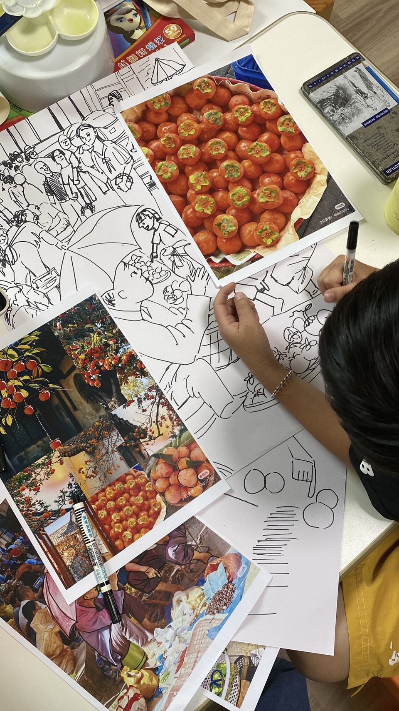
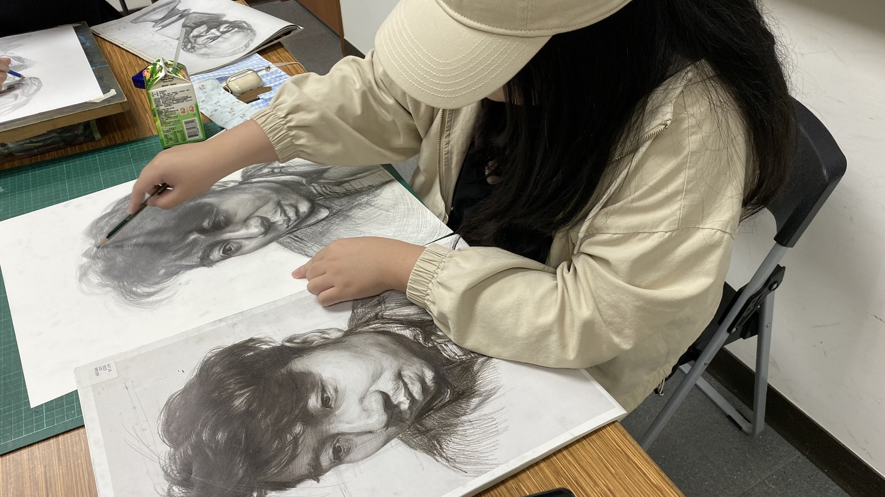
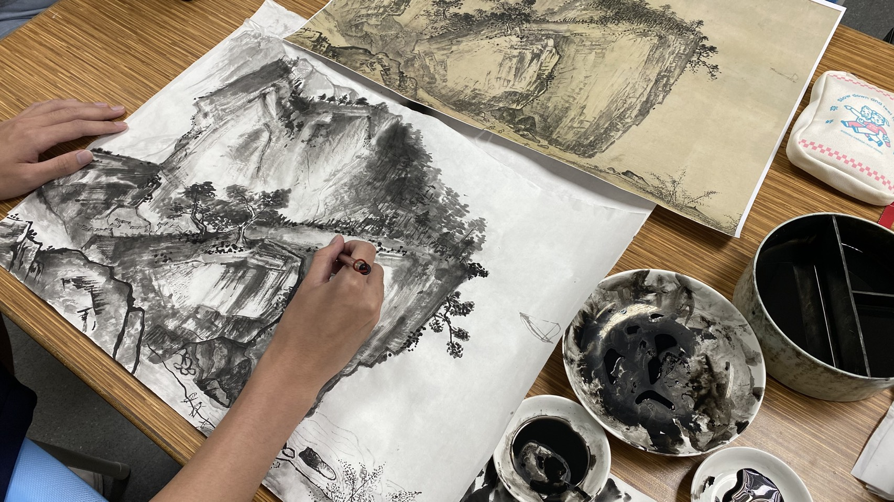
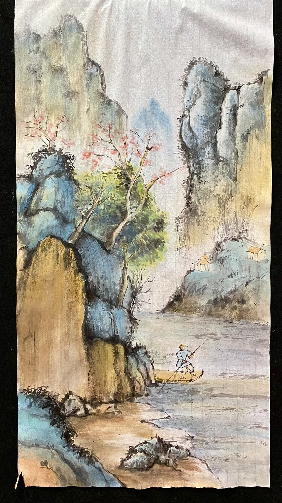

一位 24 歲、已經不太能算是「大學新鮮人」的創作者。 23 歲才踏入大學，身邊圍繞著滿滿 20 歲的青春氣息—— 每天上課都像參加「逆齡實驗計畫」， 一邊畫畫，一邊努力跟上他們的熱血節奏。🔥 2024 年，創立了自己的小天地——參参玖工作室。 這裡是我把傳統與創意揉進顏料裡的基地， 教學內容涵蓋： 素描、水彩、國畫水墨、繪本、海報、LOGO 設計， 甚至還有閃閃發光的水晶飾品創作。✨
過程紀錄




示範過程與成品
